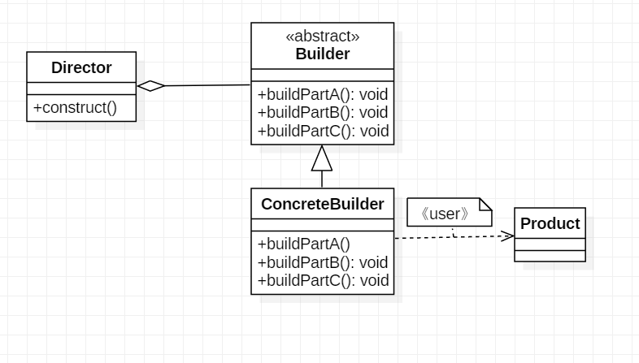

创建型-建造者模式
定义
- 让建造者类负责对象的创建工作
- 将一个复杂对象的构建与它的表示相分离，使得同样的构建过程可以创建出不同的表示
标准
- 类中有很多属性，为了避免构造函数参数太多。通过构造函数配置必填参数配合
set()方法来解决
区别
- 工厂模式是用来创建不同但相同类型的对象（继承同一父类或者接口的一组子类），由给定的参数来决定创建哪种类型的对象
- 建造者模式是用一种类型的复杂对象，通过设置不同的可选参数，定制化的创建不同对象
UML

实现思路
抽象化主体
创建属性
无参构造
setter/getter
创建抽象主体的特性方法
1
2
3
4
5
6
7
8
9
10
11
12
13
14
15
16
17
18
19
20
21
22
23
24
25
26
27public abstract class Computer {
protected String mBoard;
protected String mDisplay;
protected String mOS;
public Computer() {
}
//设置主板
public void setmBoard(String mBoard) {
this.mBoard = mBoard;
}
//设置显示器
public void setmDisplay(String mDisplay) {
this.mDisplay = mDisplay;
}
//设置操作系统
public abstract void setOS();
public String toString() {
return "Computer [mBoard=" + mBoard + ", mDisplay=" + mDisplay + ", mOS=" + mOS + "]";
}
}
指定生成主体
指定主体继承抽象化主体
实现具体特性
1
2
3
4
5
6
7
8
9
10public class MacBook extends Computer{
public MacBook() {
}
public void setOS() {
mOS = "Mac X 10";
}
}
抽象化
抽象化创建关于抽象主体的属性生成方法
抽象化创建关于抽象主体创建生成方法，返回结果为抽象化主体
1
2
3
4
5
6public abstract class Builder {
public abstract void buildBoard(String board);
public abstract void buildDisplay(String disPlay);
public abstract void buildOS();
public abstract Computer create();
}
指定生成Builder
实例化MacBook，转为抽象化主体
实现抽象化Builder方法
1
2
3
4
5
6
7
8
9
10
11
12
13
14
15
16
17
18
19
20
21
22
23
24public class MacBookBuilder extends Builder{
private Computer computer = new MacBook();
public void buildBoard(String board) {
computer.setmBoard(board);
}
public void buildDisplay(String disPlay) {
computer.setmDisplay(disPlay);
}
public void buildOS() {
computer.setOS();
}
public Computer create() {
return computer;
}
}
组装实现
将抽象化Builder作为属性，并生成带参构造方法生成Builder实例
创建组装方法，参数为抽象化主体的属性，通过Builder实例调用Builder方法承接参数
1
2
3
4
5
6
7
8
9
10
11
12
13public class Director {
Builder builder = null;
public Director(Builder builder) {
this.builder = builder;
}
public void construct(String board,String disPlay) {
builder.buildBoard(board);
builder.buildDisplay(disPlay);
builder.buildOS();
};
}
测试
生成指定主体实例
生成带参构造的组装实体，因为指定生成实体继承抽象化主体。所以，指定主体实例即为组装实体的参数
组装实体实现组装方法，得到指定生成主体
1
2
3
4
5
6
7
8public class Main {
public static void main(String[] args) {
Builder builder = new MacBookBuilder();
Director pcDirector = new Director(builder);
pcDirector.construct("因特尔", "VOC");
System.out.println(builder.create().toString());
}
}
总结
优点：
- 良好的封装性。内部没有实现setter/getter方法，客户端不必知道产品内部组成的细节
- 建造者独立，容易拓展
缺点:
- 产生多余的Builder对象以及Director对象，消耗内存
- 本文链接：https://www.wl960127.top/posts/36573/
- 版权声明：本站内容均为个人学习笔记,不涉及商业用途，仅提供学习参考,第三方摘录已署名链接,未署名请评论添加,转载署名来源即可。
分享